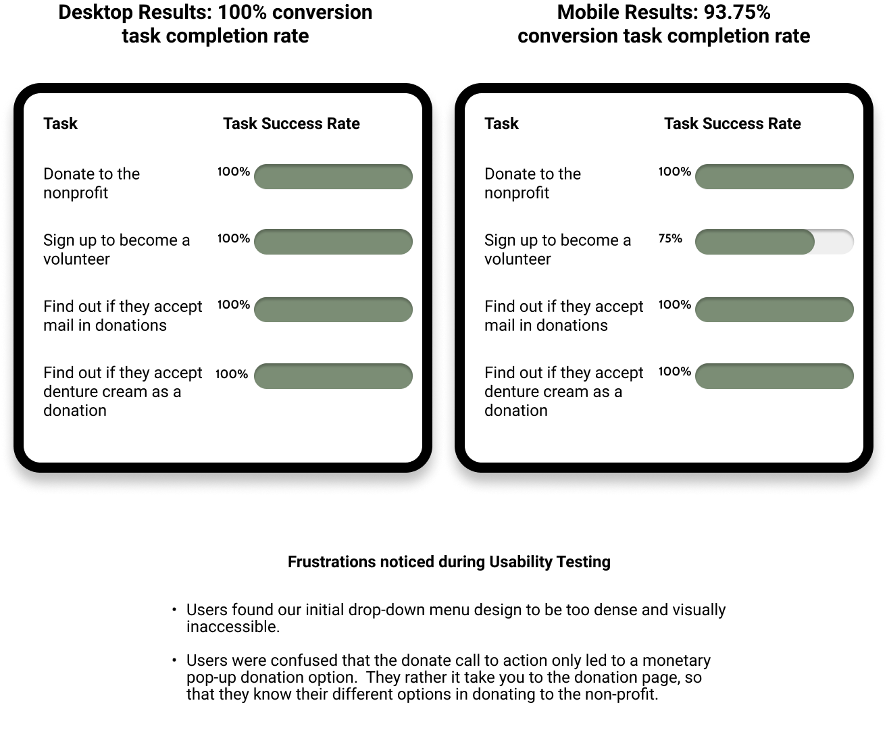

Austin Humanists at Work
Website Redesign with UX/UI Design
Overview
Austin Humanist at Work is a local non-profit organization that has been around since 2014.
Our team was challenged to redesign the existing website into a user friendly design that users can easily interact with.
Problem
How might we improve Austin Humanists at Work’s website design so that potential volunteers, donors, and those seeking resources can successfully navigate and engage with the non-profit based on iterative usability testing.
Solution
Simplify the Website Design with the Users in Mind by Adding Three Solutions:
Impact
User Research
We started our user research process by interviewing 5 total users and conducting a survey to pinpoint and understand who our users are.
User Survey Insights
User Interview Insights
During our user interviews we found out one key factor. Users needs transparency when it comes to getting involved with a non-profit organization.
Synthesize and Empathize
After our team interviewed 5 users and conducted the survey, we created an affinity diagram and a empathy map. This helped us understand and empathize with our users goals and pain points.
Defining our User Persona
After synthesizing our user research data and creating our empathy map, we were able to define our user persona and create a storyboard that ideally portrays Audrey’s interaction with Austin Humanists at Work’s website.
Getting into research on the Current Website Design
The next part of our research was to understand how users like Audrey interact with the current website. To understand the user’s expectations and pain points, we conducted a heuristic evaluation on the current website, created a competitor analysis, and performed usability testing.
Heuristic Evaluation
By performing a heuristic evaluation on several webpages, it allows us to really study the current website design and as a group discuss some potential user interface recommendations.
Competitive Analysis
Creating a competitive analysis allowed us to understand the strengths and weaknesses of different direct and indirect competitors.
Current Website Usability Testing
Last research we conducted a usability test on the current website. During this usability test, we asked users to perform 4 tasks they had to complete while navigating through the website.
Organizing Our Priorities for the Features We Want to Focus On When Redesigning
With the data gathered on the usability feedback, heuristic, and competitior analysis, we created a feature prioritization matrix to help us narrow down on the features we wanted to implement on the redesign for the website.
Mapping out our User Flow and Establishing our Navigation
Last step before we start wireframing, we wanted to establish the user flow and created a site map on how the new navigation bar should look like.
Low-Fidelity Wireframing
With all the user research gathered, we each created sketches of the homepage, donation page, and volunteer page. We then dot voted on which aspects of everyone’s sketches we wanted to incorporate.
Low-Fidelity Usability Testing
To remain consistent, we performed the same usuability testing tasks on our prototyped low-fidelity wireframes.
Mid-Fidelity Wireframing
Next we iterated on our mid-fidelity wireframes with the low-fidelity usability testing feedback in mind. We also created a mid-fidelity responsive design for mobile devices.
Mid-Fidelity Usability Testing
Again to remain consistent, we performed the same usuability testing tasks on our prototyped mid-fidelity wireframes for desktop and mobile.

Getting Ready to start our High-Fidelity Wireframe
In our low and mid-fidelity we mainly focused on the user flow and information architecture excluding design elements so that we could get feedback pertaining specifically to the UX of our redesign rather than stylistic components.
We are now ready for the UI development process, for the first steps we decided on some color palettes using color theory as a basis and each created moodboards of what we interpreted the redesign to look like.
We then dot voted and came to a consensus on our vision.
First Round of our High-Fidelity Wireframes
Using the consensus of our vision for our redesign and the mid-fidelity feedback, we iterated and prototyped our first round of high-fidelity desktop and mobile wireframes.
A/B Testing
During our dot voting, we decided we wanted to perform two A/B testings on our high-fidelity wireframes. One for which logo suits the website better, and the second one focusing on the color palette for our call to actions.
5 Second Usability Testing
Another test we performed on our high-fidelity wireframes is a 5 Second Usability Testing. For this test, we only allowed the users to take a look at our home page for 5 seconds and they were asked some questions after the 5 seconds were up.
High-Fidelity Usability Testing
Of course the last test to remain consistent, we performed the same usuability testing tasks on our prototyped high-fidelity wireframes for desktop and mobile.
Final Website Redesign vs. Current Website
Finally, we gathered all the testing data and feedback on our high-fidelty wireframes and iterated our final version of our website redesign for Austin Humanists at Work. Check out and compare the redesign vs. the current website.
Conclusion
Through a lot of research and multiple testings, we were able to integrate a user friendly design where users were no longer reading through paragraphs of text to find what they were looking for. Three main things we incorporated that users wanted:
1. Redesigning the Donation page to have less text and clear call to actions for different ways to donate.
2. Adding a sign-up volunteer form directly on the Volunteer page.
3. Add clear transparency on the non-profit organizations mission, donations, and what the volunteers will be doing.
Lessons Learned
1. Be confident and don’t be afraid to question some design decisions. I had good input and questions to certain design aspects, but I just need to be more confident when voicing my opinions. Everyone’s input should be heard and discussed.
2. Project Management is essential. It is important to understand who is working on what tasks during the project, and what tasks are completed. Having good project management through the entire process allows us to be more efficient with our time and helps meet our deadline.